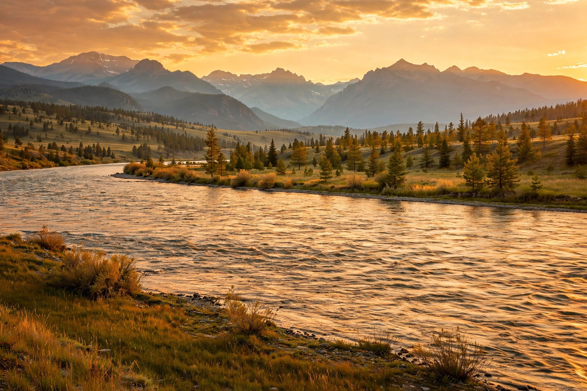
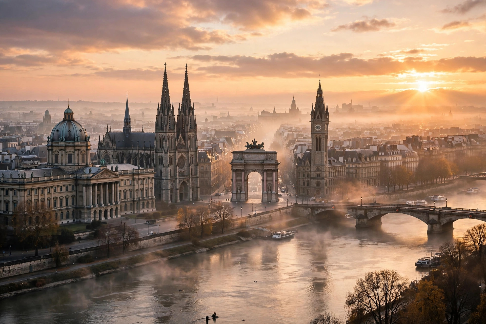

Ask any PPSC topper which section felt like free marks, and most will say the same thing: General Knowledge. It is not a deep subject. It is a wide one — and examiners keep returning to the same three wells: world capitals, famous rivers, and famous firsts. Learn these three clusters properly and you walk into the paper already holding marks that other candidates leave on the table.
This guide gives you the highest-yield facts in each cluster, the traps examiners set around them, memory tricks that actually stick, and a 14-day plan to lock it all in — just the material that shows up in real papers.
Why Capitals, Rivers and Firsts Dominate GK Papers
Think about it from the examiner's side. A one-paper test needs questions that are short, unambiguous and easy to mark — and a capital city, a river's length or a "first" in history fits that brief perfectly. That is why the same facts recycle across PPSC, FPSC, NTS and other tests. GK is also the section where preparation pays off fastest: an hour spent on capitals can be worth more than a day spent on a vague, sprawling topic.
The catch is that GK punishes two things: guessing between lookalike answers, and overconfidence. The capital of Australia is not Sydney. The longest-river question has more than one correct-sounding answer. And "firsts" questions mix up first person, first woman and first country.
World Capitals: The 20 You Must Know Cold
Start with the capitals examiners ask most often — especially the ones people get wrong. The pattern is clear: the famous city is often not the capital.
- Australia — Canberra (not Sydney, not Melbourne). The classic trap question.
- Canada — Ottawa (not Toronto, not Vancouver).
- Turkey — Ankara (not Istanbul, the largest city).
- Brazil — Brasília (not Rio de Janeiro, not São Paulo).
- Switzerland — Bern (the seat of government; Zurich is the largest city).
- New Zealand — Wellington (not Auckland).
- Nigeria — Abuja (moved from Lagos in 1991).
- Kazakhstan — Astana (renamed back from Nur-Sultan in 2022).
- Myanmar — Naypyidaw (not Yangon, the former capital).
- South Africa — Pretoria (administrative capital; Cape Town is legislative, Bloemfontein judicial).
Add the straightforward ones you should never miss: France — Paris, Japan — Tokyo, China — Beijing, Russia — Moscow, Egypt — Cairo, Iran — Tehran, Iraq — Baghdad, Afghanistan — Kabul and India — New Delhi. Then build outwards by region: one sitting each for Europe, Africa, Asia and the Americas.
A memory trick that works: pair each capital with one vivid image. Canberra and kangaroos. Ottawa and ice hockey. Ankara and the "anchor" of Turkey. Silly images stick; dry lists do not.

Famous Rivers: Longest, Largest and Most-Asked
River questions usually test one of three things: length, volume, or location. Keep those three lenses separate and the questions get much easier.
- Nile — the longest river in the world at roughly 6,650 km, flowing north through Egypt into the Mediterranean Sea.
- Amazon — the largest river by water volume, flowing through South America into the Atlantic.
- Yangtze — the longest river in Asia, flowing entirely within China.
- Mississippi–Missouri — the longest river system in North America, draining into the Gulf of Mexico.
- Danube — Europe's second-longest river, flowing through ten countries, more than any other river.
- Indus — Pakistan's lifeline, rising in Tibet and flowing through Pakistan into the Arabian Sea.
Also lock in the rivers of Pakistan: the Indus and its tributaries — Jhelum, Chenab, Ravi, Beas and Sutlej. Remember them through "Punjab means five waters": those five tributaries are the five waters. For world rivers, learn one fact and one "famous for" tag per river, then test yourself the same evening. Recalling a list without looking is revision; reading it twice is not.
Famous Firsts: The Questions Examiners Love Most
"Firsts" questions are pure memory, and they repeat more than almost any other GK type. The trick is precision: read whether the question asks for the first person, the first woman, or the first in a particular country.
- First human in space: Yuri Gagarin (1961).
- First person on the Moon: Neil Armstrong (1969), followed by Buzz Aldrin.
- First to climb Mount Everest: Edmund Hillary and Tenzing Norgay (1953).
- First woman prime minister in the world: Sirimavo Bandaranaike of Sri Lanka (1960).
- First President of Pakistan: Iskander Mirza (1956).
- First Prime Minister of Pakistan: Liaquat Ali Khan (1947).
- First capital of Pakistan: Karachi.
- First Nobel Prize in Physics: Wilhelm Röntgen (1901), for X-rays.
Build your own "firsts" notebook with three columns: achievement, person, year. Years matter — examiners often give four people and ask who was first, or give one person and ask when. Practise both directions.

The 5 Traps That Cost Marks in GK
- The famous-city trap: Sydney, Istanbul, Toronto and Rio are all wrong answers to capital questions. Largest city, or capital?
- The longest-versus-largest trap: Nile is longest, Amazon is largest by volume. Examiners swap these words deliberately.
- The "first" wording trap: first person, first woman and first country are three different answers. Read the whole question.
- The renamed-capital trap: capitals move and get renamed — Astana, Naypyidaw and Abuja all appear because of this.
- The stale-fact trap: GK changes. Re-check any list older than a year before trusting it.
Your 14-Day GK Plan
- Days 1–3: Capitals. Twenty capitals a day by region, with one image association each. Evening recall test, no peeking.
- Days 4–6: Rivers. World's major rivers plus Pakistan's five tributaries. One "famous for" tag per river.
- Days 7–9: Firsts. Build the three-column notebook and practise in both directions.
- Days 10–12: Mixed MCQ drills. 100 GK MCQs a day under time pressure, from our GK practice section and the mock test simulator.
- Days 13–14: Error notebook only. Revise nothing new. Re-attempt every question you got wrong in days 10–12 and write down why.
That last step is the one most aspirants skip — and the one that turns a good GK score into a great one.
- Capitals: Canberra, Ottawa, Ankara, Brasília and Wellington are the classic trap answers — learn the capital, not the famous city.
- Rivers: Nile is longest, Amazon is largest by volume, Yangtze is longest in Asia, Indus is Pakistan's lifeline.
- Firsts: Gagarin (space, 1961), Armstrong (Moon, 1969), Hillary & Norgay (Everest, 1953), Bandaranaike (first woman PM, 1960).
- Revise by recall, not re-reading — and spend the last two days on your error notebook alone.
Frequently Asked Questions
Which is the longest river in the world?
The Nile, at roughly 6,650 km. The Amazon is the largest by volume of water, not by length — examiners often test the difference between the two.
What is the capital of Australia?
Canberra. Sydney is the largest and most famous Australian city, but it is not the capital — this is one of the most repeated GK trap questions.
How many GK questions appear in the PPSC one-paper exam?
There is no fixed published split, but General Knowledge and Everyday Science together form a sizeable share of the General Ability portion of the 100-MCQ paper — which is why a strong GK score lifts your total so reliably.
Where can I practise free General Knowledge MCQs?
Right here on MCQs Tayyari — the General Knowledge practice section and the mock test simulator let you drill capitals, rivers and firsts in real exam format, free and without login.
Start practicing — free, no login needed
195,450+ MCQs · solved past papers · real exam simulator with timer & negative marking